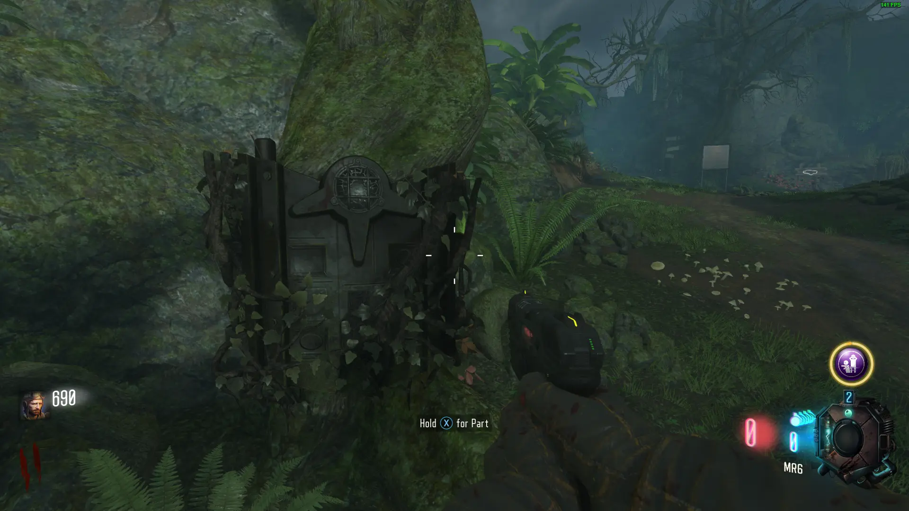
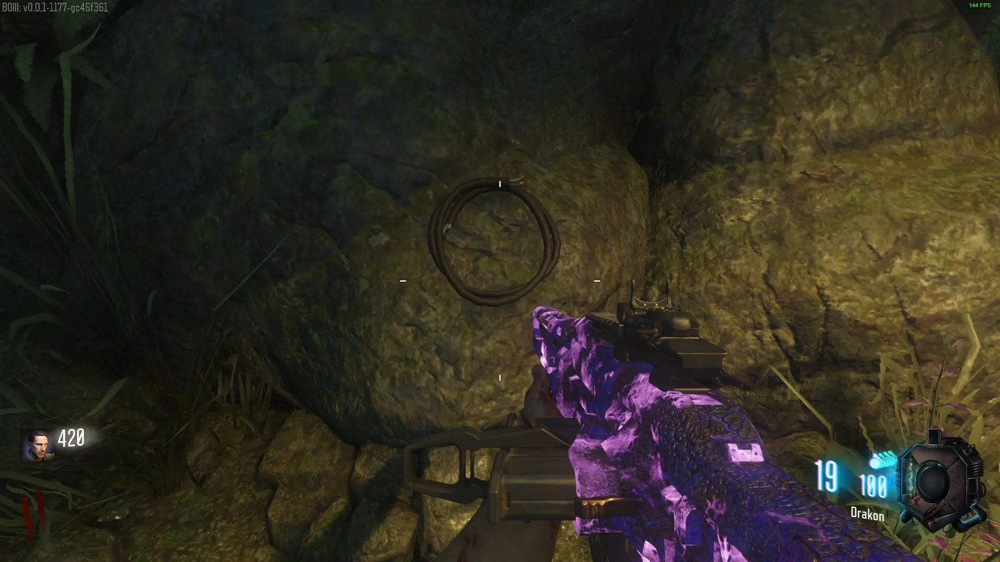
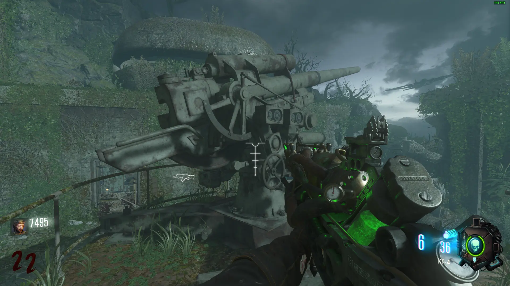

Interact with 3 Sock Monkeys


Shield
Obtain the First Part of the Shield near Lab A on the Wall in the following locations:

Obtain the Third Part of the Shield near Lab B on a Tree in the following locations:

Obtain the Second Part of the Shield near the AA Cannon in the First Room on the Right in the Bunker in the following locations:


Gas Mask
Obtain the First Part of the Gas Mask near the Propellor Trap Near Spawn in the following locations:

Obtain the Second Part of the Gas Mask near the Green Water in the following locations:

Obtain the Third Part of the Gas Mask near the Bottom of the Zipline in the following locations:


Pack-a-Punch
Grab all 3 Levers around the Bunker
Free Widow's Wine/Spider Boss Fight
Obtain the KT-4
Drop down and Fight the Spider Boss by Shooting it in the Mouth, then pick up the Spider Venom
Get Widow's Wine from the Pool in the Cave behind the Boss
Friendly Thrasher
Obtain the Masamune
Use Skull of Nan Sapwe to Break the Wall in the Lower Testing Room in the Bunker, the the Left of the Entrance
Use Masamune on the Vines Revealed behind that Wall
Shoot the Spore behind the Vines
Have a Zombie inhale the Poisonous Gas from the Spore
KT-4

Masamune Upgrade
Obtain the First Part of the Masamune:

Obtain the Second Part of the Masamune:
Obtain the Third Part of the Masamune:
Skull of Nan Sapwe
Go to the Ritual Platform with the 4 Bloody Skulls surrounded by the Challenge Pillars, to the right of Spawn
Take each Skull to its Podium, this can be figured out by the Markings on the Skulls and the Podiums

After placing a Skull, Green Portals will Spawn, protect the Skull until the it is Cleansed, the Place it back onto the Ritual Platform
After all 4 Skulls have been Cleansed, a Log will lift into the Air, revealing a Secret Cavern
Interact with the Skull of Nan Sapwe, a Lockdown will start, and Keepers will Spawn
Kill them to fill the Skull with Souls, after enough Souls the Lockdown will end, then you can pick up the Skull
Main Quest
Obtain the Skull of Nan Sapwe and go to the Bunker Room with Purple Water
You must find 3 Cogs to Fix the Elevator
Plane Cog
Get a Bucket filled with Blue water, a Seed, and the KT-4
Plant the Seed, Water it, and Shoot the KT-4 at the Soil
If done correctly, Green Particles will illuminate around the Plant, do this 3 Rounds in a Row
If done correctly, the Plant will be Purple with Green Spots
Harvest it to get the AA Shell (If you dont get it, repeat these Steps)
Go to the Anti-Air Platform to the Right of the Bunker Entrance
A Plane will Fly over the Map every 3 Minutes
Load the Shell into the AA Gun, wait for the Plane to line up with the Barrel of the AA Gun and then interact to Fire

The Plane will Explode if you hit it, If you miss you have to get another AA Shell and try again
The Cog Will Fall Somewhere on the Map, you can see it Flying through the Air when the Plane Explodes
Pick up the Smoking Cog in one of the Following Locations


Dragon Research Room Cog
Get the Anywhere But Here Gobblegum
Use it to Teleport in the Secret Lab A Research Lab, pick up the Cog by the Dragon Egg
Zipline Shock Cog
Once everyone has finished their Trials, Lightning will Strike the Ritual Platform Periodically
When the Base of the Ritual Platform is Electrocuted, Take out your Shield and run through it
Once your Shield is Electrified, Go to Lab A or the Dock by the Bunker
If you're on Solo
-Melee the Control Panel with your Electrified Shield
-The Zipline will become Electrified
-Ride the Zipline and Melee when you are over the Dock to Drop, if you miss you will down
If you're on Co-op
-Have one Player take the Zipline
-Have someone Melee the Control Panel with the Electrified Shield to Drop the Player on the Zipline onto the Dock, if you miss they will down
Pick up the Cog and Re-enter the Map via the Ramp
**PREPARE FOR THE BOSS FIGHT**
You need the Gas Mask as the Lower Level is Full of Poisonous Gas
You also need the Masamune to get through the Vines with Spores blocking the path
To start the Boss Fight, shoot the Masamune at the Exposed Spore on the Boss, Thrashers and Spiders will Spawn duting the Fight
The only way to kill the Boss is by shooting the Spores on one of the 4 Arms
After each Arm is destroyed you get a Max Ammo
You can only Shoot the Spores when they are Exposed
After the Final Arm is Destroyed the Cutscene will Play, and you will get all of the Perks